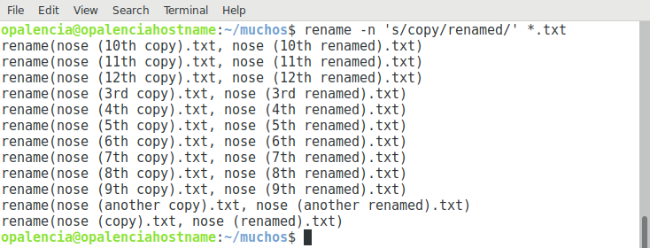

Renombrar archivos masivos > rename¶
Nombre del comando: rename
Man page online: https://linux.die.net/man/1/rename
Descripción: Renombra varios archivos a la vez en una instrucción, en pocas palabras sustituye una palabra por otra en los archivos a renombrar.
Man page local: $ man rename o $ man rename > rename.txt
Instalado por defecto: Sí, al menos en Debian.
Algunas Opciones:
-n, -nono Sin acción: imprima los nombres de los archivos para cambiar el nombre, pero no los renombre, es decir, que no realice el renombrado.
-v, --verbose Explique qué se está haciendo.
-f, -force Sobre escritura: permita que los archivos existentes se sobrescriban.
Ejemplo 1: $ rename -n 's/copy/renamed/' *.txt, de todos los archivos contenidos en el folder actual y que tienen la extensión .txt, cámbiele o renómbrele la palabra “copy” por “renamed”.
Ejemplo 2: $ rename -n 's/^nose//' *.txt, de todos los archivos contenidos en el folder actual y que tienen la extensión .txt y además inician con la palabra “nose”, cámbiele o renómbrele la palabra “nose” por “nada”, es decir, que le quite la palabra “nose”.
Ejemplo 3: Este es un ejemplo en el que se renombran varios archivos por la extensión que éstos tienen y se usa el commando mv en vez de rename. Para ejecutar el ejemplo hay que crear un scrip rename.sh, darle permisos de ejecución y colocarlo en la carpeta que contiene los archivos a renombrar y luego ejecutarlo con ./rename.sh. Consideraciones: los archivos no deben iniciar con caracteres especiales y tampoco debe haber espaciones en los nombres de los archivos. -%nombre archivo.txt, este es un ejemplo claro que no deben llamarse de esa manera los archivos, lo correcto sería: nombre-archivo.txt, por mencionar un ejemplo.
rename.sh
#!/bin/bash
i=1
for FILE in `ls *.jpg`; do
NEWNAME=$(printf '%01.1d.jpg' $i)
echo Rename $FILE to $NEWNAME
mv $FILE $NEWNAME
i=$((i+1))
done
Nota
Éste scrip hará lo siguiente: renombrará todas las imagenes que terminen en .jpg con números que irán incrementando iniciando con 1 hasta las n imágenes que se encuentren en el folder donde se ejecuta dicho scrip; siempre y cuando se respeten las consideraciones arriba mencionadas.